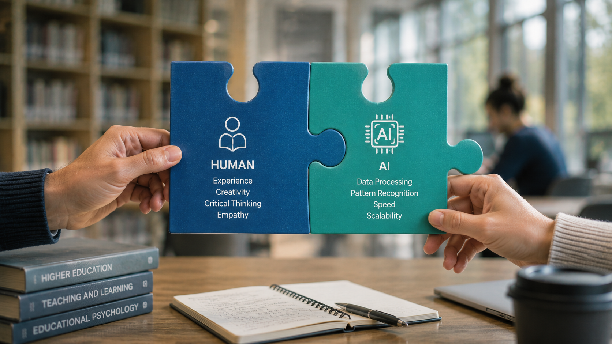
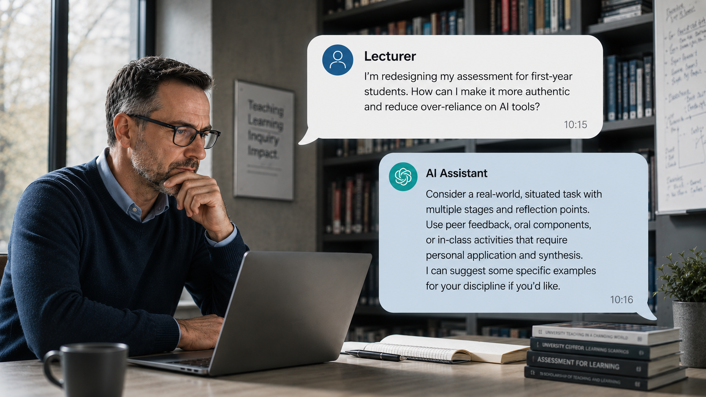
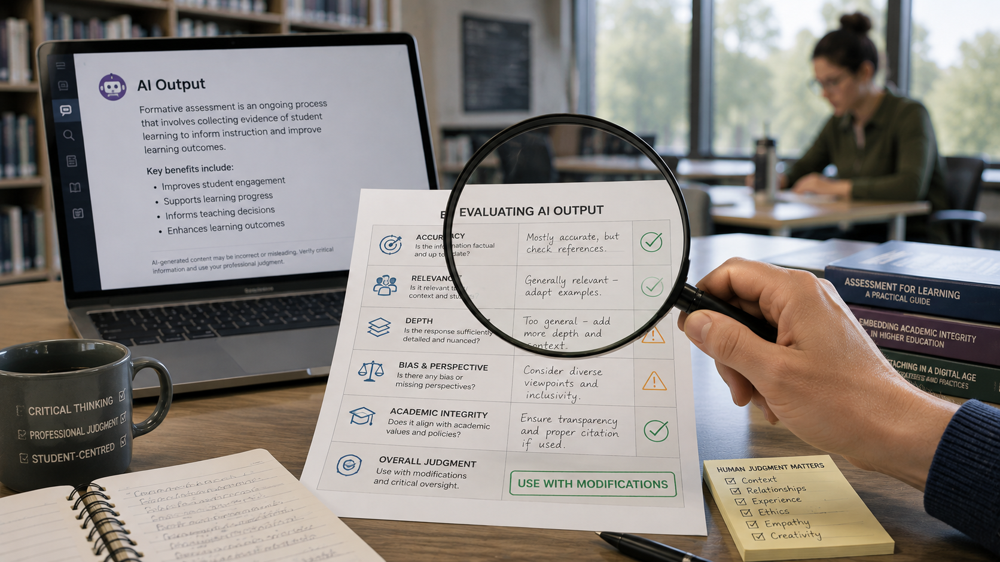
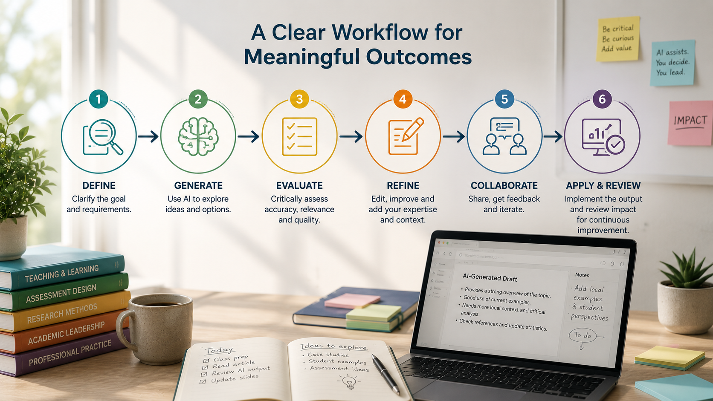
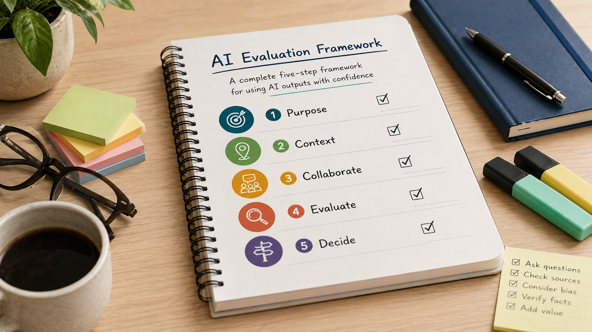

AI Competency
Working effectively and responsibly with AI — moving from understanding AI to using it well in your own professional practice.
Welcome to AI Competency
In the AI Literacy course, we explored what Artificial Intelligence is, how Generative AI works, its capabilities and limitations, and the principles that guide responsible AI use at SETU.
Now we're going to move from understanding AI to working with it.
AI competency isn't about knowing hundreds of prompts or becoming an expert in every new AI tool. It's about developing the skills and professional judgement to use AI effectively in your own work.
Throughout this course, you'll be encouraged to work with an AI tool as you learn. You'll experiment, compare approaches, evaluate outputs and consider where AI can — and cannot — add value to your own professional practice.
A simple framework
We'll use a simple framework throughout this course:
Purpose
First, understand what you're trying to achieve.
Context
Then provide the context AI needs.
Collaborate
Work iteratively with the AI rather than expecting a perfect first response.
Evaluate
Evaluate what it produces.
Decide
And ultimately, you decide what is appropriate to use.
The technology contributes capability
You contribute purpose, context, expertise and judgement.
Interactive activity: Where are you now?
Rate your confidence for each statement below from 1 (not confident) to 5 (very confident). We'll come back to this at the end of the course, so you can see what's changed.
Key messageWhat competency really means
AI competency isn't measured by how much you use AI. It's demonstrated by how well you judge when and how to use it.
Should I use AI for this?
Before thinking about prompts, we need to think about purpose. Not every task needs AI.
Sometimes AI can save considerable time, help us explore possibilities, or provide a useful starting point. Sometimes doing the task ourselves is quicker. And sometimes AI simply isn't appropriate.
Start with purpose
Before using AI, ask: What am I trying to achieve? Consider the nature of the task.
- Is it routine or repetitive?
- Would generating possibilities be useful?
- Would a first draft save time?
- Are you trying to summarise, organise, compare or transform information?
These are often good opportunities for AI assistance.
Now weigh the risk
- Does the task involve confidential or personal information?
- Could an inaccurate response cause harm?
- Does it require professional judgement?
- Does it involve a consequential decision about another person?
- Is AI an appropriate and proportionate way to do this?
The greater the potential impact, the greater the need for human oversight — and sometimes the correct decision is not to use AI at all.
For each task, where should the balance sit? Context matters more than rigid rules — the point is to think about where professional judgement is essential.
Notice the pattern: the more a task involves consequential judgement about a person, the more human leadership matters.
Try it yourself
Identify three tasks you regularly perform: one AI could potentially support, one where AI might assist but human expertise must lead, and one you would not delegate to AI.
Key messageStart with the task, not the tool
Choosing AI well begins with purpose, not prompts.
What does AI need from me?
AI doesn't know your context unless you provide it. It doesn't automatically understand SETU, your programme, your department, your students, your audience or the purpose behind your work.

Compare:
A generic request
"Create a workshop."
A request with context
"Help me design a 45-minute introductory workshop for university administrative staff who have little experience with Generative AI. The aim is to build confidence rather than technical expertise. Include one practical activity and allow ten minutes for discussion."
The second request gives AI something much more useful to work with.
Useful context might include
Purpose
What are you trying to achieve?
Audience
Who is this for?
Context
What does the AI need to understand?
Constraints
Length, format, policy requirements, tone or other boundaries.
Output
What would a useful response look like?
But remember: more context isn't automatically better
Never provide personal, confidential or sensitive information simply to improve an AI response.
"Write a report about our event." What would the AI tool need to know before it could do this well? Think it through, then reveal some possible answers.
- What event?
- Who is the report for?
- What is its purpose?
- What information is available?
- What length?
- What tone?
- What should it contain?
Practical challenge
Take one of the tasks you identified in Section 1 and write an initial request to AI. Then ask: what context could you add to make this more useful? Revise it, and compare the two.
Key messageContext is yours to give
AI cannot infer the professional context that you bring to your work. Better context usually produces better results.
Move beyond the perfect prompt
You may have encountered complicated prompt formulas promising perfect AI responses. Templates can be useful, but effective AI use doesn't depend on memorising a formula. Think conversation rather than command.

Your first request begins the process. Look at the response. What works? What's missing? What would you change?
You might say:
- "That's too formal. Make it warmer."
- "You've missed the accessibility implications. Add those."
- "Give me three completely different approaches."
- "Challenge the assumptions in this proposal."
- "What have I overlooked?"
- "Ask me five questions before you continue."
This is where AI becomes particularly useful — not as an answer machine, but as a thinking partner.
Interactive demonstration: one-shot versus conversation
Here's an initial request and a mediocre first response, improved through three follow-up interactions. At which point did the output become genuinely useful?
Initial request
"Write a short announcement about our new opening hours."
First response — generic
"Please note our opening hours have changed. See below for details. Thank you for your understanding."
Refinement 1
"From Monday, the front desk will open at 8.30am instead of 9am, to better match student timetables. All other hours are unchanged."
Refinement 2
"Good news — from Monday we're opening earlier, at 8.30am, to fit better around your timetable. Everything else stays the same."
Refinement 3
"Good news — from Monday we're opening earlier, at 8.30am, to fit better around your timetable. Everything else stays the same. (Worth checking: does this affect students with early accessibility appointments, and should the website and signage be updated at the same time?)"
Try it
Continue the conversation you started in Section 2. Make at least two refinements rather than starting again — for example, ask AI to critique its own suggestion, request an alternative perspective, ask what might be missing, change the audience, or ask it to make the response more concise.
Key messageDevelop the conversation
Don't search endlessly for the perfect prompt. Develop the conversation.
Useful isn't the same as correct
Producing an impressive response is something AI does extremely well. Evaluating whether that response is actually useful is our responsibility.

Five questions to ask
Is it accurate?
Check facts, calculations, quotations and references.
Is it appropriate?
Does it suit the audience, context and purpose?
Is it complete?
What has been omitted?
Is it fair?
Could assumptions, stereotypes or bias be influencing the response?
Is it mine?
Does the final work reflect your expertise, judgement and voice?
Fluency can create an illusion of authority. A beautifully written response can still be completely wrong.
Below is a polished AI-generated briefing on a proposed change to printing costs. It contains four things you can click to flag — and one further problem that can't be clicked, because it isn't there at all. Click the parts you'd want to check.
Found 0 of 4.
- Inaccurate fact / false precision: "exactly 63%... without exception" — an implausibly precise, universal claim. Real figures vary by department and are rarely exact.
- Fabricated reference: the Doyle & Nolan (2022) citation looks genuine but may not exist. Always verify a reference in a trusted database before using it.
- Unsupported claim: "staff clearly no longer value printed materials" — no evidence was given for this; it's an assumption presented as fact.
- An assumption about the audience: "younger staff... naturally more comfortable... without difficulty" — a stereotype that isn't necessarily true and isn't relevant to the decision.
- An important omission — nothing to click, because it isn't there: the briefing never asks who might be negatively affected by the change (for example, staff or students without reliable access to digital alternatives). What's missing can matter as much as what's wrong.
Would you use this briefing as it stands? What would you need to check first?
Key messageNever outsource evaluation
Never outsource evaluation to the system that generated the content.
Finding genuine value
AI doesn't need to transform your entire role to be valuable. Often the greatest benefits come from small, everyday tasks.
AI might help you move from a blank page to a first draft. It might turn notes into a structure. It might summarise a long public document, suggest questions before a meeting, help you adapt complex information for a different audience, compare two versions of a document, or identify themes across feedback.
Five broad categories
Create
↺ Tap to flipCreate
Draft, brainstorm, structure. Moving from a blank page to a first draft, or notes to an outline.
Transform
↺ Tap to flipTransform
Simplify, translate, reformat, adapt. Turning something into a different shape for a different audience.
Analyse
↺ Tap to flipAnalyse
Compare, categorise, identify patterns across documents, feedback or data.
Challenge
↺ Tap to flipChallenge
Critique, question assumptions, provide alternative perspectives on your own thinking.
Prepare
↺ Tap to flipPrepare
Plan meetings, workshops, presentations or projects before you begin.
The objective isn't to find more things to give AI. It's to identify where AI creates meaningful value.
Interactive activity: the task makeover
Choose one familiar task and think it through:
- How do I currently complete this?
- Where is the friction?
- Could AI assist with part of it?
- What must remain human?
- Would using AI actually improve the process?
Key messageMeaningful value, not use for its own sake
Look for meaningful value, not AI use for its own sake.
AI in your practice
Learners choose the pathway most relevant to them. You can explore others if you wish.
Choose the example that best matches your role:
Teaching & Learning
Case study — designing a learning activity
An academic wants students to explore competing perspectives on a complex issue. She asks AI for learning activity ideas, rejects several generic suggestions and develops one promising idea through further conversation. She then adapts it using her knowledge of the students, programme learning outcomes and discipline.
Where did the value come from — the initial AI output, the iterative conversation, the academic's disciplinary expertise, or a combination?
Almost always a combination. The initial AI output gave her a range of starting ideas to react to; the iterative conversation shaped one into something workable; her disciplinary expertise was what made it academically sound and appropriate for these students. The AI expanded the possibilities — her judgement decided which one, and how.
Challenge: use AI to develop one learning activity relevant to your discipline. Identify explicitly what you changed and why.
Assessment
Case study — rethinking an assessment
A programme team is reviewing an assessment that could easily be completed using Generative AI. Instead of asking AI to redesign it, they provide the learning outcomes and ask it to suggest several ways students could demonstrate the required learning. The team evaluates the suggestions using the SETU Assessment Redesign Framework and develops its own revised assessment.
What would be problematic about simply implementing the AI's preferred assessment?
AI can generate plausible-sounding assessment ideas, but it cannot judge educational quality, fit with programme outcomes, or what is realistic for these students and this discipline. Assessment design is an academic judgement. AI can expand the possibilities; it cannot determine whether an assessment is any good.
Research
Case study — exploring a new area
A researcher beginning work in an unfamiliar interdisciplinary area uses AI to identify terminology, competing concepts and potential search terms. Rather than treating the AI output as a literature review, she uses it to develop searches in trusted academic databases and verifies the literature independently.
Where did AI appropriately support the research process, and where would reliance on it become problematic?
Appropriate support: orienting her quickly in an unfamiliar area and surfacing search terms she might not have found alone. It would become problematic the moment its output was treated as the literature review, rather than as a starting point for searches she verified herself in trusted databases.
Professional, Management & Support Services
Case study — making information accessible
A staff member needs to communicate a complex procedural change. He uses AI to create a first draft in plain English and asks it to identify terminology that might be unclear to someone unfamiliar with the process. He checks the resulting information against the official policy and substantially edits the communication before publication.
What did the staff member retain responsibility for?
He retained responsibility for accuracy against the official policy, for making sure no nuance or exception was lost in simplifying, and for the final wording before it was published. AI helped him draft in plain English; checking and approving it stayed his job.
Leadership & Management
Case study — preparing for a decision
A manager has several lengthy public reports to consider before a planning meeting. AI helps identify recurring themes and differences between the reports. Rather than asking AI which option the university should choose, the manager uses the analysis as one input into a broader decision-making process involving evidence, colleagues, institutional priorities and professional judgement.
What's the difference between decision support and decision-making?
Decision support is AI helping surface themes, options and evidence faster. Decision-making is weighing that evidence against institutional priorities, colleagues' views and accountability — something that stays with the manager, not the tool.
Key messageCapability is transferable
AI capability is transferable. The professional context determines how it should be applied.
From individual tasks to workflows
As your confidence grows, you may find yourself moving beyond individual prompts.

Consider preparing a workshop. AI might help you brainstorm objectives, develop a structure, critique the structure, generate activity ideas, adapt materials for accessibility, draft participant communications, and review feedback afterwards.
AI hasn't "created the workshop." It has supported different stages of a human-led workflow. This distinction becomes increasingly important as AI systems become more capable and AI agents begin completing multiple connected tasks.
The question changes from "What can AI do?" to "Where within this process can AI appropriately add value?"
For each stage of this recurring process, mark whether it's typically Human-led, AI-assisted, or potentially automated in future.
Then ask: where within this workflow is human review or approval essential — whatever the stage?
Map your own workflow
Choose a recurring process from your own work. Map its major stages, mark each Human / AI-assisted / Potentially automated, and identify where human review or approval is essential.
Key messageDon't automate responsibility
Don't automate responsibility. Use AI to support processes while keeping meaningful human oversight.
Just because AI can doesn't mean AI should
Competency also means recognising boundaries. As AI becomes more capable, it's easy to assume that anything technically possible is automatically appropriate. It isn't.
Be particularly cautious where tasks involve
- personal or sensitive data
- confidential university information
- high-stakes decisions
- assessment judgement
- decisions affecting students or colleagues
- legal or regulatory requirements
- information where accuracy is critical
Return to the principles introduced in AI Literacy. Ask: should AI be involved? What information am I sharing? What could happen if the output is wrong? Who is accountable? And — where must a human remain in control?
An AI tool can analyse 120 job applications and rank candidates against specified criteria. Doing so would save several hours.
Would you use it?
Decide for yourself, then reveal each additional consideration in turn — and see whether your answer changes.
Applications contain personal data.
Some criteria require contextual judgement.
The AI cannot explain all its rankings.
The decision materially affects individuals.
Key messageCapability does not equal appropriateness
Capability does not equal appropriateness.
Put it all together
Choose one genuine, low-risk task from your own work and use the complete framework: Purpose, Context, Collaborate, Evaluate, Decide.

Purpose
What are you trying to achieve, and why is AI appropriate?
Context
What information does AI need — and what information should you not provide?
Collaborate
Work iteratively. Don't accept the first response.
Evaluate
Check accuracy, appropriateness, completeness, bias and quality.
Decide
Determine what, if anything, you will use.
There's no "right" outcome here
There is no requirement for AI to have improved the task. Discovering that AI wasn't useful is also evidence of good professional judgement.
Record briefly
Key messageJudgement, not output
Successful AI use isn't measured by the output. It's measured by the quality of the human judgement surrounding it.
Reflection: from competency to fluency
You began this course by rating your confidence. Let's return to those questions now.
Rate yourself again
Now consider
AI Competency isn't about mastering a particular tool
Tools will change. Models will change. Capabilities will change. The transferable capability is your ability to approach those technologies critically, confidently and responsibly.
The next stage is AI Fluency
Fluency moves beyond using AI effectively within existing practice. It asks us to consider how AI might change that practice: how might we redesign processes? How might teaching and assessment evolve? How do we evaluate emerging AI technologies? How do we lead responsible change? And what does human expertise look like in an increasingly AI-enabled university? That is where our next stage begins.
Well done.
You've completed AI Competency — the second course of SETU's GenAI programme. You've practised choosing AI well, giving it context, collaborating rather than commanding, evaluating its outputs, and knowing where the boundaries lie.
Download your certificate of completion
Enter your name as you'd like it to appear, then preview or download your certificate (save as PDF, or print).
Your name stays on this device — it is only used to generate the certificate.
Where next
The next stage of your learning journey is AI Fluency — moving beyond using AI effectively to leading with it: evaluating new technologies, redesigning practice and shaping a culture of responsible innovation.
Developed by the Centre for Academic Practice, based on a course development script created by Dr Hazel Farrell. The course was built using Claude Code, with images generated using ChatGPT.